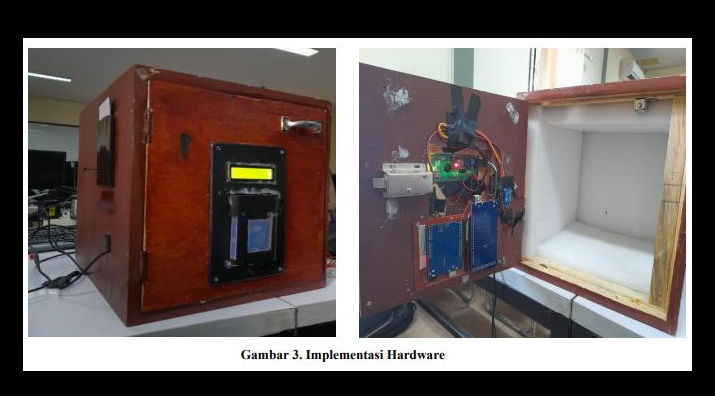
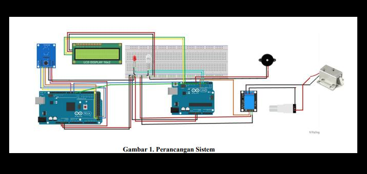
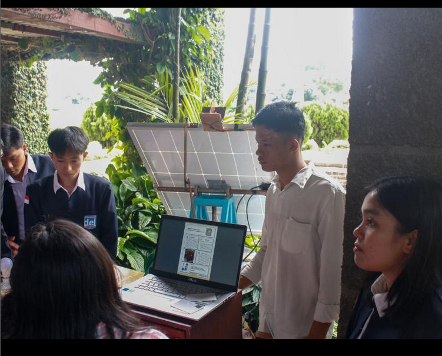
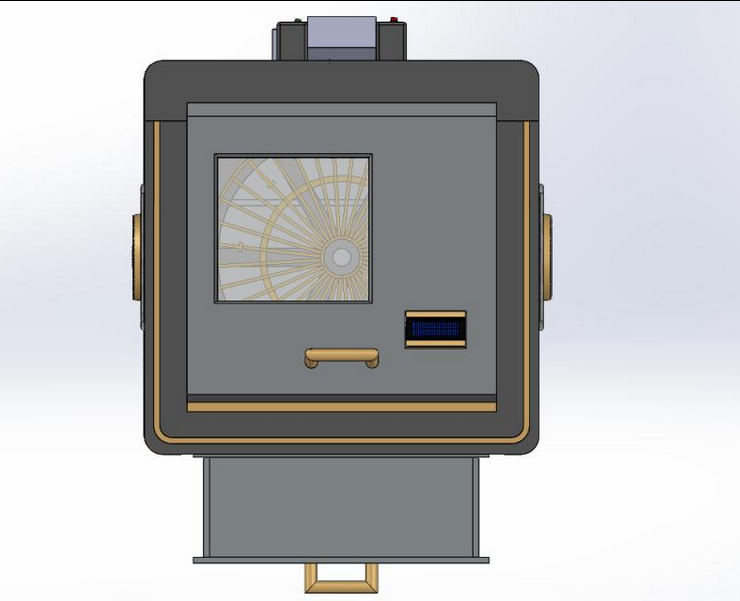
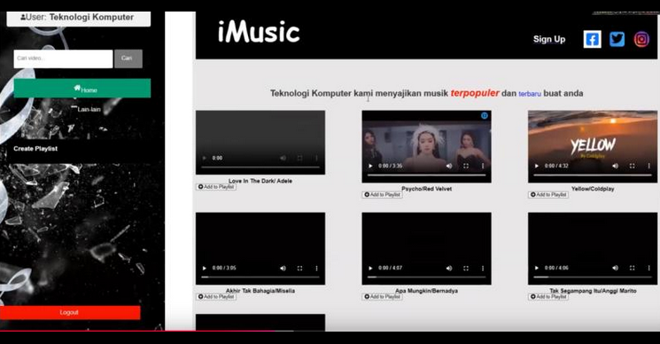

Saya Paian Manalu, mahasiswa tingkat akhir program D3 Teknologi Komputer di Institut Teknologi Del. Saya memiliki minat dan fokus di bidang DevOps, Internet of Things (IoT), Cloud Computing, Embedded Systems, Networking, dan Web Development.
Ketahui Saya Lebih LanjutHai, saya Paian Manalu, seorang developer pemula yang memiliki ketertarikan besar di bidang teknologi.
Keahlian saya meliputi berbagai bidang teknologi terkini:
Selain itu, saya juga berpengalaman dalam alat-alat berikut untuk desain dan pengembangan perangkat:
Periode: Apr 2024 - Jun 2024
Smart-Box adalah perangkat IoT berupa brankas pintar yang menggunakan teknologi RFID (Radio Frequency Identification) untuk membuka dan mengamankan akses. Hanya pengguna dengan kartu atau perangkat yang terautentikasi yang dapat membuka brankas ini, memastikan keamanan dan efisiensi dalam penggunaannya.
Keahlian: Fritzing, Internet of Things (IoT)
 GitHub: Link GitHub Smart-Box
Video: Link Video Smart-Box
Periode: Jan 2024 - Jun 2024
Solar Panel Tracker IoT adalah perangkat pintar yang mengoptimalkan penyerapan energi matahari dengan menggerakkan panel mengikuti pergerakan matahari secara otomatis. Dengan teknologi IoT, sistem ini memantau posisi matahari secara real-time, meningkatkan efisiensi energi hingga 30% lebih tinggi dibandingkan panel statis. Pengguna dapat mengakses data kinerja dan status sistem secara langsung melalui aplikasi atau dashboard.
Keahlian: Internet of Things (IoT), SOLIDWORKS
GitHub: Link GitHub Solar Panel Tracker
Periode: Okt 2023 - Des 2023
Dryer Box adalah alat pengeringan payung yang memanfaatkan teknologi IoT. Dengan elemen pemanas dan kipas, alat ini menghasilkan aliran udara panas untuk menguapkan air dari payung basah. Dilengkapi dengan sensor suhu, kelembapan, dan sensor keberadaan, alat ini memastikan pengeringan yang cepat dan efisien.
Keahlian: SOLIDWORKS
GitHub: Link GitHub IoT Dryer Box
Video: Link Video IoT Dryer Box
Periode: Nov 2023 - Des 2023
Game Tebak Angka adalah permainan interaktif di mana dua pemain saling berkompetisi untuk menebak angka rahasia yang ditetapkan oleh lawan. Game ini diimplementasikan menggunakan bahasa pemrograman seperti Python, dan dijalankan di konsol atau terminal.
Keahlian: C (Programming Language)
GitHub: Link GitHub Game Tebak Angka
Video: Link Video Game Tebak Angka
Periode: Sep 2023 - Des 2023
iMusik adalah platform streaming musik berbasis web yang dibangun menggunakan Laravel. Pengguna dapat mencari lagu, membuat playlist, dan memutar musik secara online. Dengan otentikasi pengguna dan antarmuka responsif, iMusik menawarkan pengalaman musik yang mudah diakses di berbagai perangkat.
GitHub: Link GitHub iMusik
Video: Link Video iMusik
Periode: Jan 2023 - Mei 2023
iTravel adalah website yang menyediakan informasi lengkap untuk membantu perencanaan perjalanan dan wisatawan. Fitur utama termasuk informasi destinasi, objek wisata, dan kuliner dari seluruh dunia, serta panduan perjalanan untuk memudahkan eksplorasi tempat-tempat baru.
Keahlian: Web Development, Project Management
GitHub: Link GitHub iTravel
Video: Link Video iTravel